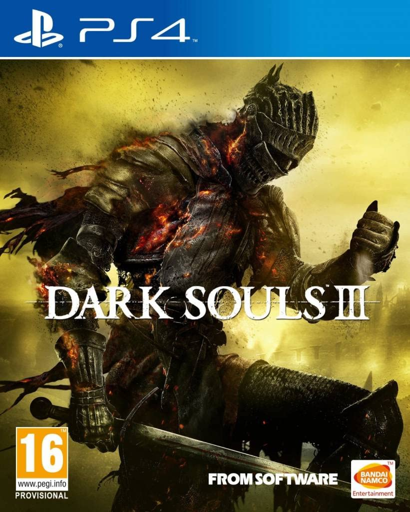

1.Dark Souls

El juego tiene lugar en los últimos días de la Edad de Fuego, la cual comenzó tras la derrota de los dragones que anteriormente gobernaban el mundo. Durante la Edad Antigua el mundo era un lugar oscuro y lúgubre habitado solamente por una raza inmortal de dragones gigantes cuya capacidad de prolongar su vida eternamente provenía de sus escamas. Así fue hasta que un grupo de seres descubrieron el poder de la Primera Llama y, siendo liderados por Gwyn, el Señor de la Luz Solar, acabaron con casi la totalidad de los dragones en una legendaria guerra que dio origen, tras la derrota del bando reinante, a la Edad de Fuego.
2.Dark Souls 3
Ambientado en el reino de Lothric, el jugador tiene la tarea de sobrevivir a un apocalipsis que se aproxima, provocado por el conflicto entre la Era del Fuego y aquellos marcados con la Señal oscura, el clásico conflicto dado en las anteriores entregas de la saga. Para sobrevivir en este caso, el personaje del jugador deberá enfrentarse a los Señores de la Ceniza, héroes del pasado que enlazaron la Primera Llama.
3.The Witcher 3

El mundo está en llamas: el Imperio de Nilfgaard se adentra en el corazón de los Reinos del Norte. Geralt de Rivia está siendo perseguido por un enemigo que no conoce la piedad: la Cacería salvaje, una mítica cuadrilla de jinetes espectrales, portadores de la destrucción y la muerte, capaz de destruir ciudades enteras de la noche a la mañana. Geralt, que tendrá sus propios intereses, deberá atravesar un laberinto de enemigos para encontrar y proteger a la persona descrita en una antigua profecía.